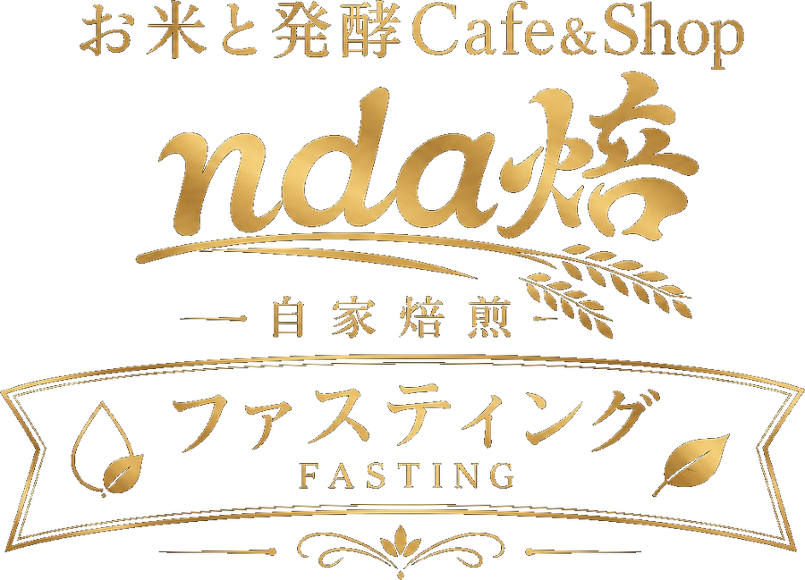

プログラムFASTING & WELLNESS RETREAT
滞在型ファスティング
ウェルネス
福島の食と自然で、
人は本来の姿へ還る
んだばい ／ ndanda合同会社
2拠点
2〜6名・少人数
10+年の実績
ファスティングとは
ABOUT FASTING

ファスティング（断食）は、一定期間固形物を控えて消化器官を休ませることで、身体本来の回復機能を引き出す方法です。
食べ続ける現代の生活では、内臓が休む時間が不足しがちです。消化に使われていたエネルギーが解放されると、近年注目されるオートファジー（細胞の自己浄化）のはたらきも期待されます。
「んだばい」では、医師監修のもと、福島県産米の発酵食から生まれたオリジナルのファスティング液を用い、無理なく続けられる形で、安全に配慮して実施します。
ファスティングの適切な頻度
HOW OFTEN
季節の節目や生活の区切りごとに、無理なくリズムを整えるのがおすすめです。
年間3〜4回／年
1回あたり1〜3日程度（短期）
頻度の調整体調に応じて／不調時は医師に相談
※ 短期（1〜3日）で消化器官と代謝のリズムを整えるのに十分とされます。年3〜4回の定期実施で、身体の滞留やリズムの偏りをリセットします。
なぜファスティングが必要か
WHY FASTING
- 食べ続ける日常が、身体本来のリズムを乱す
- 消化・代謝に休息が必要
- 細胞レベルの修復（オートファジー）の活性化
- 血糖値・ホルモンバランスの安定
- 炎症抑制・免疫調整につながる可能性
- 自律神経・心身のリズムを整える
- 生活習慣・内面意識の再整理を促す
メディカルアドバイザー
MEDICAL ADVISOR
SUPERVISOR
矢作 直樹
医師・医学博士・東京大学名誉教授
救急医学・集中医療の専門医
救急医学・集中医療の専門医
著書『人は死なない』『おかげさまで生きる』他多数
※ 医師監修のもと、安全なファスティングプログラムを提供しています
プログラム
PROGRAMS


よくある質問
FAQ
ファスティングが初めてでも大丈夫ですか？
はい。まずは1泊2日の体験コースからお試しいただけます。医師監修・完全少人数制で、初めての方も安心してご参加いただけます。
持病があったり、薬を服用中でも参加できますか？
事前のカウンセリングで確認いたします。ご予約時に健康状態・服薬・アレルギーをご記入ください。内容によっては、安全のためご参加をお控えいただく場合があります。
食事は出ますか？
期間中はオリジナルのファスティング液を中心に、回復食として福島県産米を使った発酵食・お粥・スープをご用意します。
キャンセルはできますか？
7日前まで無料（全額返金）です。詳細は各プログラムページのキャンセルポリシーをご確認ください。
どちらの拠点を選べばよいですか？
炭酸泉と多彩なプラン（最長7泊）をご希望なら田村市、温泉と里山の静けさをご希望なら葛尾村がおすすめです。各プログラムページをご覧ください。